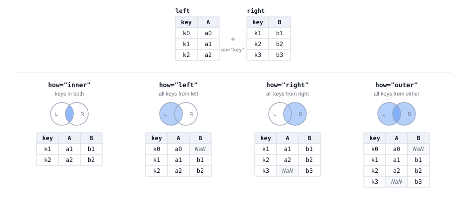
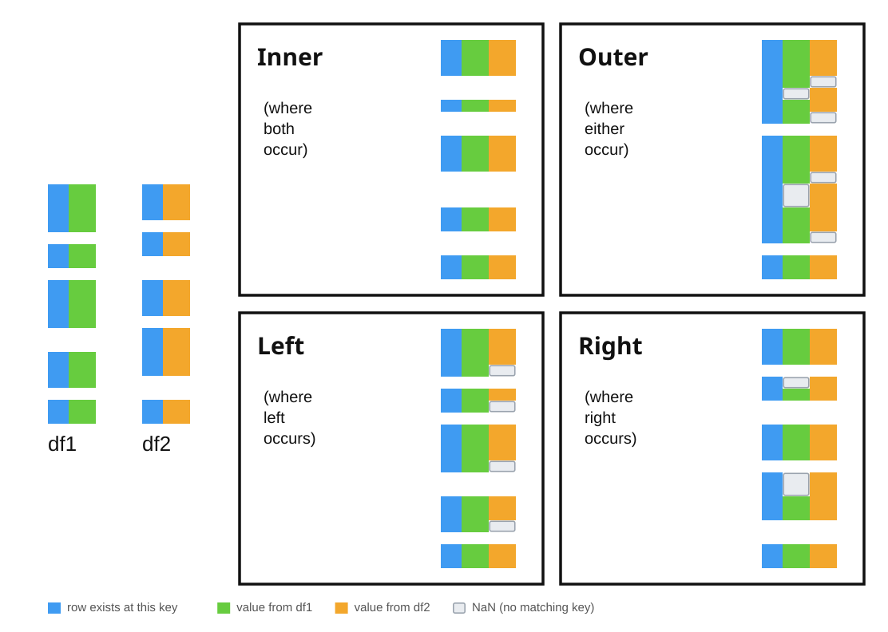

Code
import pandas as pd
url = 'https://eds-217-essential-python.github.io/data/openaq_goleta_measurments.csv'
goleta = pd.read_csv(url)
goleta['parameter'].value_counts()parameter
pm25 734
o3 711
pm10 517
Name: count, dtype: int64A panda, matching two halves along the seam. MidJourney 5
On Friday we asked whether ozone and particulate matter follow the same daily cycle, and we answered it the only way one table allows: we grouped ozone by hour, we grouped PM2.5 by hour, we printed both, and we compared them by eye. Two answers, side by side on the screen, but never side by side in the data.
Comparing by eye is fine for two columns of twenty-four numbers. It stops working the moment you want to ask anything that needs both measurements in the same row: was the smoky hour also the ozone hour? Does high PM2.5 predict high ozone three hours later? What is the correlation between them?
To ask any of those questions, the two measurements have to sit in the same table. This morning we will learn the pandas code patterns that allow you to join data together.
By the end of this session you will be able to:
pd.merge(left, right, on='key'), and explain what the key doeshow='inner' and how='left', and explain what each one does to your row countleft_on= and right_on=Create the file. In the Explorer, hover over the EDS217 heading and click New File…, then type the name in full, extension included: Session_6A_Joining_Data.ipynb
Check the kernel. The Kernel Selector in the notebook’s action bar should read Python 3.11.15 (Conda: eds217). If it reads anything else, click it, choose Change Kernel, and pick the eds217 entry.
Add a title cell. Click + Markdown in the action bar, and give it this content, with today’s date:
# Day 6: Session 6A - The Join Pattern
[Session Webpage](https://eds-217-essential-python.github.io/course-materials/interactive-sessions/6a_joining_data.html)
Date: 09/08/2026Save with Ctrl + S (Cmd + S on macOS), and keep saving as you go.
Read in the Goleta air quality file, which you have now met twice:
import pandas as pd
url = 'https://eds-217-essential-python.github.io/data/openaq_goleta_measurments.csv'
goleta = pd.read_csv(url)
goleta['parameter'].value_counts()parameter
pm25 734
o3 711
pm10 517
Name: count, dtype: int64Here is our Goleta air quality file, which we now know contains three parameters and 1,962 rows. Every row is one measurement of one pollutant at one hour.
Before we can join two tables we need two tables, so we will start by making them. Both lines below are Wednesday’s filter pattern, and nothing else:
o3 = goleta[goleta['parameter'] == 'o3'].copy()
pm25 = goleta[goleta['parameter'] == 'pm25'].copy()
print(o3.shape)
print(pm25.shape)(711, 15)
(734, 15)Now we have 711 hours of ozone and 734 hours of PM2.5. The two instruments did not record the same number of hours, which is important! A gap like that usually says something about how the data was (or was not) collected.
Each new table has fifteen columns, and twelve of them hold the same value in every row. Keep only the two columns that matter, and give the measurement column a name that says what it is. One method per line, the way we learned last Thursday:
o3 = o3[['datetimeLocal', 'value']]
o3 = o3.rename(columns={'value': 'o3_ppm'})
pm25 = pm25[['datetimeLocal', 'value']]
pm25 = pm25.rename(columns={'value': 'pm25_ugm3'})
o3.head()| datetimeLocal | o3_ppm | |
|---|---|---|
| 0 | 2024-07-11T18:00:00-07:00 | 0.025 |
| 1 | 2024-07-11T19:00:00-07:00 | 0.028 |
| 2 | 2024-07-11T20:00:00-07:00 | 0.029 |
| 3 | 2024-07-11T21:00:00-07:00 | 0.027 |
| 4 | 2024-07-11T22:00:00-07:00 | 0.026 |
🐍 Renaming before a join is not just cosmetic. If both tables arrive at the join with a column called value, pandas cannot keep them both under that name, so it renames them value_x and value_y and leaves you to work out which is which. Naming your columns first costs you two lines now, but saves a lot of headache later…
We have two tables (DataFrames) with one column in common: datetimeLocal, the hour the reading was taken. This shared column is the key, and a merge (or join) is the operation that lines the two tables up by it.
The way we “join” these two DataFrames is using the pd.merge() function.
🐍 Are we joining or merging?
We use pd.merge() as the general-purpose command for combining two datasets on a shared key. The name comes from the statistical computing tradition: base R has a merge() function, and SAS uses MERGE in its data steps, so merge was the familiar verb for the audience pandas was written for. There is also a DataFrame.join() method in pandas, which combines two datasets on their index and which is now essentially a convenience wrapper around the same machinery as merge (we’ve seen that happen before in things like .value_counts()). But while the name follows R and SAS, the semantics follow SQL: the how= argument takes inner, outer, left, and right, which are the SQL join types. So the command we use to join datasets is itself a merged version of syntax from different languages… 🤖 🤯 Computers 🤯 🤖!!

The same two tables, joined four ways.
The left table has the keys k0, k1 and k2, plus a column A. The right table has k1, k2 and k3, plus a column B. The two tables agree in the middle and disagree at each end, which is the situation most real joins are in. Each panel shades the part of the two key sets that one how= keeps, and prints the table we get back.
Read the four results against each other. inner returns two rows and drops k0 and k3, because neither of those keys is in both tables. left returns three rows: every key from the left table, with NaN in column B at k0, where the right table has no matching row. right is the mirror of it, with NaN in column A at k3. outer returns all four keys and fills in NaN on both sides. The same two tables give us two, three, three and four rows, and the only thing we changed between the four panels is the value of how=!

The same four joins, on tables long enough to have gaps in them.
A three-row table keeps the arithmetic easy to follow, but the files we merge in practice are longer than that and their keys line up much less tidily. In the second figure, df1 and df2 are drawn against a shared key axis running down the page, so every row sits at the position of its own key, and a missing key shows up as a gap in the column rather than as a number you would have to go and count. Neither table covers the whole axis, and the stretches they are missing are not the same stretches.
The colours show where each part of a row came from: blue marks a key that is present in the result, green a value taken from df1, orange a value taken from df2, and a pale outlined box a NaN, where the key matched on one side only. inner keeps only the keys that both tables cover, so its column is the shortest one in the figure. outer keeps every key that either table covers, so its column is the longest, and the price of those extra rows is a gap wherever only one of the two tables had a value. left and right each keep one table’s keys intact and fill in from the other table wherever a key matches.
Compare the two figures before you go on. The first figure tells us what each how= keeps, and the second tells us what each one costs in rows and in NaN values, which is worth checking on your own data before you trust a merged table.
paired = pd.merge(o3, pm25, on='datetimeLocal')
paired.head()| datetimeLocal | o3_ppm | pm25_ugm3 | |
|---|---|---|---|
| 0 | 2024-07-11T18:00:00-07:00 | 0.025 | 3.0 |
| 1 | 2024-07-11T19:00:00-07:00 | 0.028 | 8.0 |
| 2 | 2024-07-11T20:00:00-07:00 | 0.029 | 6.0 |
| 3 | 2024-07-11T21:00:00-07:00 | 0.027 | 4.0 |
| 4 | 2024-07-11T22:00:00-07:00 | 0.026 | 9.0 |
Read it left to right as three instructions:
pd.merge(left, right, on='key')
# ↑ ↑ ↑
# the two tables the column they have in commonon= names the column that both tables share. Pandas looks up every value of the left table’s key in the right table’s key, and glues the matching rows together end to end.The result has one row for every hour that appears in both tables, and the columns of both. For the first time in this course, one row of your data holds two different measurements!
paired.shape(704, 3)We now have 704 rows. We started with 711 hours of ozone and 734 hours of PM2.5.
Where did the other rows go?
You will want to ask that question every single time you merge two tables, because nothing in pandas checks the row count for you. A merge that discards a third of your data looks exactly like a merge that discards nothing.
By default, pd.merge() keeps only the rows whose key appears in both tables. The default has a name, and you should write it out:
inner = pd.merge(o3, pm25, on='datetimeLocal', how='inner')
inner.shape(704, 3)Same 704 rows: how='inner' is the merge we already ran, written out in full.
🐍 An inner join keeps the intersection of the two key sets. If you have seen a Venn diagram, this is the lens in the middle:

Circle A is the hours ozone was recorded, circle B is the hours PM2.5 was recorded, and an inner join keeps the shaded part.
Very often you do not want the intersection. You have a table you care about, and a second table of extra information you would like to attach where it exists, without losing rows where it does not.
how='left' does exactly that: keep every row of the left table, attach the right table where the key matches, and fill in nulls where it does not.
left = pd.merge(o3, pm25, on='datetimeLocal', how='left')
left.shape(711, 3)All 711 ozone hours survive. Seven of them have no PM2.5 reading to attach, and we find those seven with the help of our good friend isnull():
left.isnull().sum()datetimeLocal 0
o3_ppm 0
pm25_ugm3 7
dtype: int64how='right' does the mirror image, keeping every row of the right table:
right = pd.merge(o3, pm25, on='datetimeLocal', how='right')
print(right.shape)
print(right.isnull().sum())(734, 3)
datetimeLocal 0
o3_ppm 30
pm25_ugm3 0
dtype: int64And how='outer' keeps everything from both sides, filling nulls in both directions:
outer = pd.merge(o3, pm25, on='datetimeLocal', how='outer')
print(outer.shape)
print(outer.isnull().sum())(741, 3)
datetimeLocal 0
o3_ppm 30
pm25_ugm3 7
dtype: int64how= |
Keeps | Rows here |
|---|---|---|
'inner' (default) |
keys in both tables | 704 |
'left' |
every row of the left table | 711 |
'right' |
every row of the right table | 734 |
'outer' |
every row of either table | 741 |
Four different row counts, out of the same two tables. Which one is correct depends entirely on the question you are asking, and choosing that question is your job rather than the software’s.
Build a third table, pm10, the same way you built the other two tables: filter goleta to parameter == 'pm10', keep datetimeLocal and value, and rename value to pm10_ugm3. Then merge your PM2.5 table with it two ways, keeping pm25 on the left both times, once using how='inner' and once using how='left', and print both shapes. How many PM2.5 hours have no PM10 reading beside them?
The inner join threw away 30 PM2.5 hours and 7 ozone hours, and it is tempting to shrug at 37 rows out of 1,445 and move on.
Please don’t! Look at which rows went missing before you decide they do not matter.
On Friday we handed you a line that pulls the hour out of a timestamp. Here it is again, doing the same job on the rows the join could not match:
missing_o3 = right[right['o3_ppm'].isnull()].copy()
missing_o3['datetimeLocal'].str[11:13].value_counts()datetimeLocal
03 30
Name: count, dtype: int64Every single one of the thirty PM2.5 hours with no ozone beside it is at 03:00. Not spread across the day: all of them, all thirty, at three in the morning, on thirty different days.
o3['datetimeLocal'].str[11:13].value_counts().sort_index()datetimeLocal
00 31
01 30
02 30
04 31
05 31
06 31
07 31
08 31
09 31
10 31
11 31
12 31
13 31
14 31
15 31
16 31
17 31
18 31
19 31
20 31
21 31
22 31
23 31
Name: count, dtype: int64The ozone table shows the same thing directly. Twenty-three hours of the day have thirty or thirty-one readings, and hour '03' does not appear at all. The Goleta ozone analyser looks like it goes offline for an hour every night, quite possibly to run a calibration, and nothing in the file says so.
The merge surfaced that gap for us. A missing key cannot match anything, so the unmatched rows collect exactly the hours one instrument never recorded.
A join is one of the best data quality instruments you have. Whenever you merge two tables, look at the rows that did not match, and ask whether they have anything in common. If they do, you have learned something about how your data was collected, and it is often something nobody bothered to write down.
Do the mirror version. Pull the seven ozone hours that have no PM2.5 beside them out of left, and look at what hours they fall on. Then, in a markdown cell, say in two or three sentences whether this second gap tells a different story from the 3 a.m. one, and why. Does it look like a schedule, or does it look like an accident?
Now that the two pollutants are in the same row, we can ask the question one table could not answer. On Friday we found that ozone peaks in the early afternoon and PM2.5 peaks around midday, from which it is tempting to conclude that the bad hours are the same hours.
Test it. The top-N pattern from Wednesday, applied to the joined table:
paired.sort_values('pm25_ugm3', ascending=False).head(10)| datetimeLocal | o3_ppm | pm25_ugm3 | |
|---|---|---|---|
| 142 | 2024-07-18T01:00:00-07:00 | 0.022 | 22.0 |
| 464 | 2024-08-01T01:00:00-07:00 | 0.011 | 22.0 |
| 619 | 2024-08-08T01:00:00-07:00 | 0.025 | 21.0 |
| 673 | 2024-08-10T10:00:00-07:00 | 0.029 | 20.0 |
| 609 | 2024-08-07T15:00:00-07:00 | 0.043 | 19.0 |
| 585 | 2024-08-06T13:00:00-07:00 | 0.040 | 19.0 |
| 293 | 2024-07-24T15:00:00-07:00 | 0.027 | 17.0 |
| 349 | 2024-07-27T01:00:00-07:00 | 0.008 | 17.0 |
| 587 | 2024-08-06T16:00:00-07:00 | 0.040 | 16.0 |
| 586 | 2024-08-06T14:00:00-07:00 | 0.041 | 16.0 |
Read the timestamps and the ozone column together. The ten smokiest hours of the month are not one group but two. Four of them are at 01:00, and three of those four sit in the bottom half of the month’s ozone readings, one of them in the bottom six percent. The other six hours are daylight hours, and four of those six are in the top two percent of the month’s ozone readings.
Now average the ten together, and compare that average with the file as a whole:
print(paired['o3_ppm'].mean())
print(paired.sort_values('pm25_ugm3', ascending=False).head(10)['o3_ppm'].mean())0.022438920454545454
0.028600000000000004The mean of the ten smokiest hours is higher than the mean of every hour, 0.029 ppm against 0.022. Read on its own, that number says the smoky hours are also the ozone hours, which is the conclusion the row by row table just argued against. A single average cannot show the split at all, because it is the mean of four low readings and six high ones taken together.
The individual rows give the reading that makes physical sense. Ozone is manufactured by sunlight and cannot be produced at one in the morning, so whatever is putting particulates into Goleta’s air at 1 a.m. is a different process from the one that fouls its afternoons. A mean computed across two processes describes neither one of them well.
Two tables of hourly averages, however carefully we compare them, cannot show us that split, because the comparison we need is between two measurements taken in the same hour. A joined table puts those two measurements in the same row.
The join pattern so far assumes both tables call the key by the same name. Real files rarely line up that neatly, so pandas lets you name the two key columns separately: this column here, that column there.
Here is a case you have already met. On Friday we grouped the national parks visitor records by region and got a handful of two-letter codes back, with no idea what they meant. Count the codes in the output below, because you will want the number in a moment:
url = 'https://eds-217-essential-python.github.io/data/national_parks.csv'
parks = pd.read_csv(url)
parks = parks[parks['year'] != 'Total'].copy()
parks['region'].value_counts()region
IM 5682
NE 3637
SE 3442
PW 3194
MW 2578
NC 1547
AK 1018
NT 76
Name: count, dtype: int64Eight codes. Note that this table is not quite Friday’s: Friday’s also kept only the rows whose unit_type is National Park, and the file you have just read in keeps every unit, so it has one code in it that Friday’s did not.
Codes like these are extremely common, because whoever built the file was saving space and already knew what they meant. The fix is a lookup table: a small table, often one you write yourself, that translates codes into something a reader can use.
Here is one for the seven geographic regions, which are the ones you met on Friday:
regions = pd.DataFrame({
'code': ['AK', 'IM', 'MW', 'NC', 'NE', 'PW', 'SE'],
'region_name': ['Alaska', 'Intermountain', 'Midwest', 'National Capital',
'Northeast', 'Pacific West', 'Southeast'],
})
regions| code | region_name | |
|---|---|---|
| 0 | AK | Alaska |
| 1 | IM | Intermountain |
| 2 | MW | Midwest |
| 3 | NC | National Capital |
| 4 | NE | Northeast |
| 5 | PW | Pacific West |
| 6 | SE | Southeast |
Seven rows and two columns, typed by hand, and it is about to make 21,000 rows readable. The key is region on the left and code on the right, so you name both:
labelled = pd.merge(parks, regions, left_on='region', right_on='code')
labelled[['unit_name', 'region', 'region_name', 'year', 'visitors']].head()| unit_name | region | region_name | year | visitors | |
|---|---|---|---|---|---|
| 0 | Crater Lake National Park | PW | Pacific West | 1904 | 1500.0 |
| 1 | Lake Roosevelt National Recreation Area | PW | Pacific West | 1941 | 0.0 |
| 2 | Lewis and Clark National Historical Park | PW | Pacific West | 1961 | 69000.0 |
| 3 | Olympic National Park | PW | Pacific West | 1935 | 2200.0 |
| 4 | Santa Monica Mountains National Recreation Area | PW | Pacific West | 1982 | 468144.0 |
pd.merge(left, right, left_on='column_in_left', right_on='column_in_right')Naming the two columns separately is the whole difference. on= is the shorthand for the case where the two names happen to agree.
🐍 The result has both key columns, region and code, holding identical values. Keeping both is not a bug: pandas has no way to choose between them, so it returns both and leaves the choice to you. Drop one whenever it bothers you.
Check the row count, the way we now do after every merge:
print(parks.shape)
print(labelled.shape)(21174, 12)
(21098, 14)21,174 rows went in and 21,098 came out. Seventy-six rows did not survive, because the default is an inner join and their region code is missing from your lookup table.
Find them the way you found the 3 a.m. gap:
checked = pd.merge(parks, regions, left_on='region', right_on='code', how='left')
missing = checked[checked['region_name'].isnull()]
print(missing['region'].value_counts())
print(missing['unit_name'].unique())region
NT 76
Name: count, dtype: int64
['Blue Ridge Parkway']NT, seventy-six rows, all of them the Blue Ridge Parkway. Your lookup table has seven codes and the file has eight, because the Parkway is administered as a National Trail rather than by one of the seven geographic regions.
No error appeared and no warning printed. The inner join returned a perfectly reasonable-looking table with a real American landmark missing from it, and we only know about it because we compared two row counts.
Add a row to regions for the NT code with a region_name of your choosing, rebuild the merge, and confirm that all 21,174 rows now survive. Then write one sentence saying which how= you would use in a script that runs every month on a file somebody else maintains, and why.
pd.merge(left, right, on='key'). The key is the column the two tables have in common, and its values are what pandas matches the rows on.left_on= and right_on= when the key columns have different names in the two tables.how= decides which rows survive: 'inner' keeps keys present in both (the default), 'left' keeps every row of the left table, 'right' the mirror, and 'outer' keeps everything..isnull().sum() after a left, right or outer join. Those three joins exist in order to produce nulls, and counting the nulls tells you how many rows found no match.value_x was.